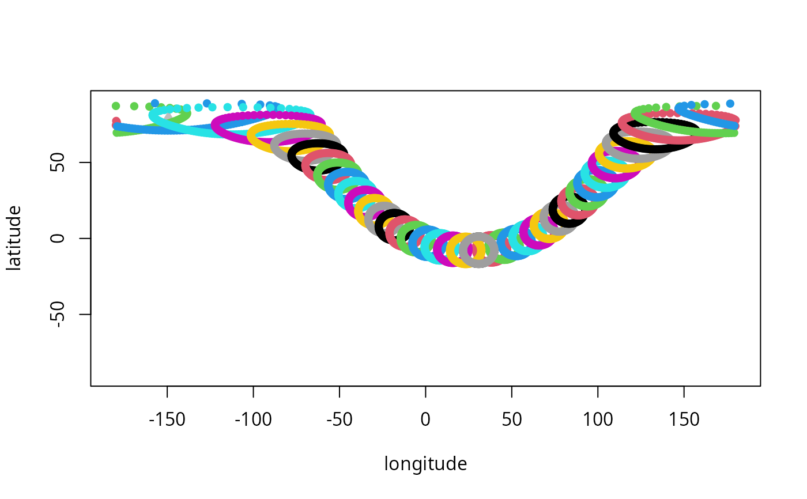
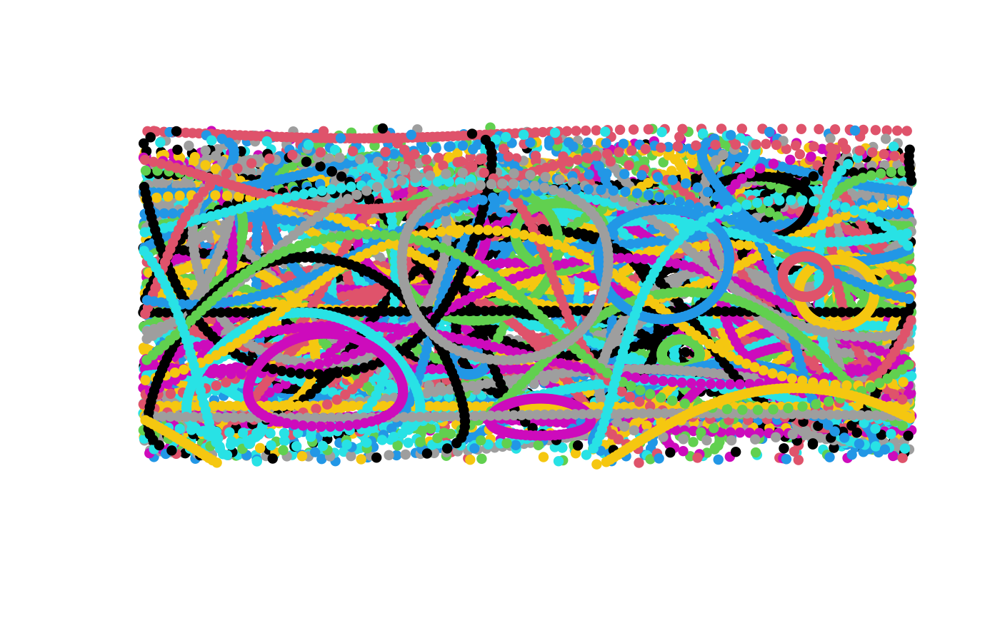

Creating points along small circles
Usage
sc_shape(
x = "random",
r = NULL,
r.ex = NULL,
r.rad = NULL,
r.deg = NULL,
n = NULL,
breaks = 100,
radius = 6371.007,
origin = c(0, 0, 0),
output = "polar",
sf.type = "polygon",
sf.wrap.dateline = TRUE,
drop = TRUE
)Arguments
- x
Numeric matrix or character string. Coordinates of the centers of the small circles
- r
The surface radius of the small circle expressed as great circle distance of the small circle's points from the center of the small circles.
- r.ex
The extrinsic radius of the small circles, i.e. the radius of the circle in the plane of the small circle.
- r.rad
The angle of the small circle in radians.
- r.deg
The angle of the small circle in degrees.
- n
Integer or NULL. only used if "x= random"
- breaks
Integer. The number of points to create from the small circle.
- radius
The radius of the sphere, defaults to the authalic radius of Earth - relevant only for Cartesian output.
- origin
The center of the sphere (don't touch this, unless you really think you know what you are doing!).
- output
Output structure for the function. The value output="polar" will return the polar (longitude-latitude) coordinates of the small circles in an array. The setting output="cartesian" will return the 3D cartesian coordinates of the small circles in an array. The option output="sf" will return an sfc geometry collection.
- sf.type
The type of sf object to be returned.
- sf.wrap.dateline
Argument indicating whether returned sf object should be wrapped around the dateline.
- drop
If there is a single small circle to be generated, should its array wrapper be dropped?
Details
The function generates a single reference (standard) small circle around the (0,0) long-lat coordinates using a given radius. This reference circle is then rotated to match a given center. The function is iterated for multiple radiiand centers (separately!).
Examples
set.seed(1)
# generate a random small circle
central <- sc_shape(r=6000, breaks=40)
plot(NULL, xlim=c(-180, 180), ylim=c(-90,90), xlab="longitude", ylab="latitude")
points(central, pch=17, col="gray")
# repeat, same radius multiple centers
smaller <- sc_shape(x=central, r=1000, breaks=100)
for(i in 1:nrow(central)) points(smaller[,,i], col=i, pch=16)

# Random circles with different radii
diff200 <- sc_shape(r=runif(200, 100, 10000))
plot(NULL, xlim=c(-180, 180), ylim=c(-90,90), xlab="", ylab="", axes=FALSE)
for(i in 1:(dim(diff200)[3])){
points(diff200[,,i], col=i,pch=16)
}

# Same center, different radius
cent <- central[10, ,drop=FALSE]
outward <- sc_shape(cent, r=seq(100, 15000, length.out=20))
plot(NULL, xlim=c(-180, 180), ylim=c(-90,90), xlab="", ylab="", axes=FALSE)
for(i in 1:(dim(outward)[3])){
points(outward[,,i], col=i,pch=16)
}